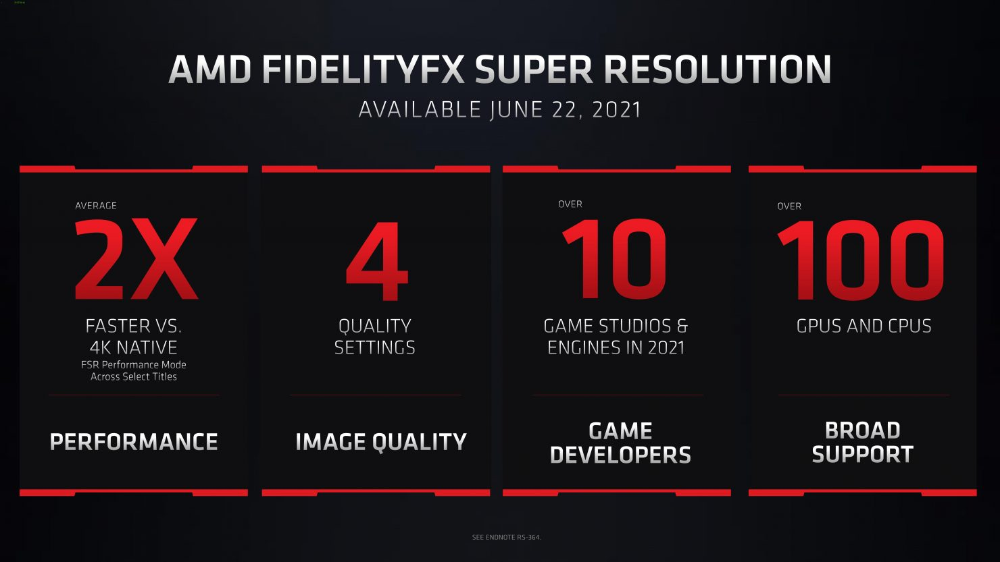

AMD FidelityFX™ Super Resolution
Autor: AMD

Definicion:
AMD FidelityFX Super Resolution es una tecnología diseñada para ofrecer a los jugadores lo mejor de ambos mundos. Cuando se active, ya no tendrás que elegir entre una alta velocidad de fotogramas y unos gráficos de alta resolución.